BIG BANNER
Aktivering af ledige:
Den nuværende aktiveringsindsats er præget af kontrol, mistillid og manglende kvalitet, og der er for dårlige muligheder for at blive opkvalificeret. Socialdemokraterne vil forbedre mulighederne for relevant aktivering til ledige. Der skal særligt fokuseres på, at de ledige, der har uddannelsesefterslæb, får opkvalificerende tilbud. Vi vil fjerne det unødige bureaukrati i beskæftigelsesindsatsen. Endelig vil a-kasserne få en større rolle i kontakten med de ledige.
Radikale Venstre ønsker en reform af indsatsen over for ledige, så aktivering og andre tilbud i højere grad målrettes den enkelte ledige. Aktivering skal ske tidligere i ledighedsforløbet, men til gengæld skal det være slut med den meningsløse aktivering.
Er man ramt af ledighed, skal der være et grundlæggende sikkerhedsnet. Men det må aldrig være en sovepude. Det er hverken til gavn for den ledige eller for samfundet. Derfor skal ydelser som dagpenge, kontanthjælp med mere modsvares af et krav om at stå til rådighed for arbejdsmarkedet. Det kan blandt andet være aktivering, så man sikres sig, at den ledige ikke kommer for langt væk fra arbejdsmarkedet og på passiv forsørgelse.
Aktiveringen skal have et langt bedre indhold og hjælpen skal være mere individuel. Vi vil styrke efteruddannelse og uddannelse, mens man er på dagpenge, samt sikre udslusning til job eller aktivering, for dem, der har brug for det.
Ledige skal aktiveres med fokus på at skaffe ledige i job. De mange meningsløse kurser, som ledige er blevet tilbudt er nu standset. Aktivering skal i størst muligt omfang finde sted på egentlige virksomheder.
Aktiveringsindsatsen skal tage udgangspunkt i det, som vil bringe den ledige tættere på beskæftigelse. Ikke al aktivering har været lige god, og derfor er vi i gang med at målrette og prioritere tilbuddene. Aktivering skal sikre, at de ledige får fodfæste på det rigtige arbejdsmarked.
Enhedslisten vil have ændret hele aktiveringssystemet. De tåbelige og ydmygende aktiveringskurser skal erstattes af individuel hjælp til jobsøgning og relevant efteruddannelse. De arbejdsløse skal mødes med respekt, i stedet for kontrol og mistillid.